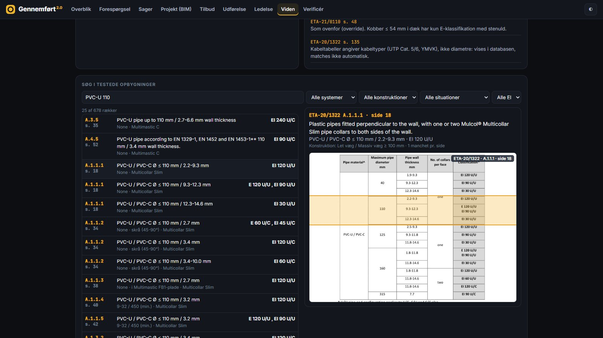
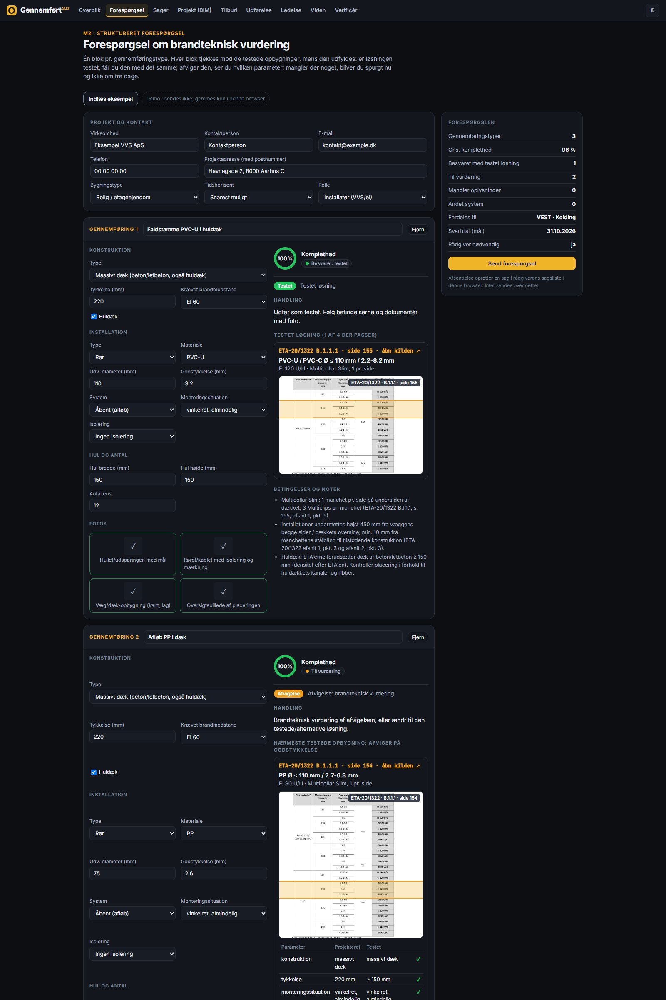
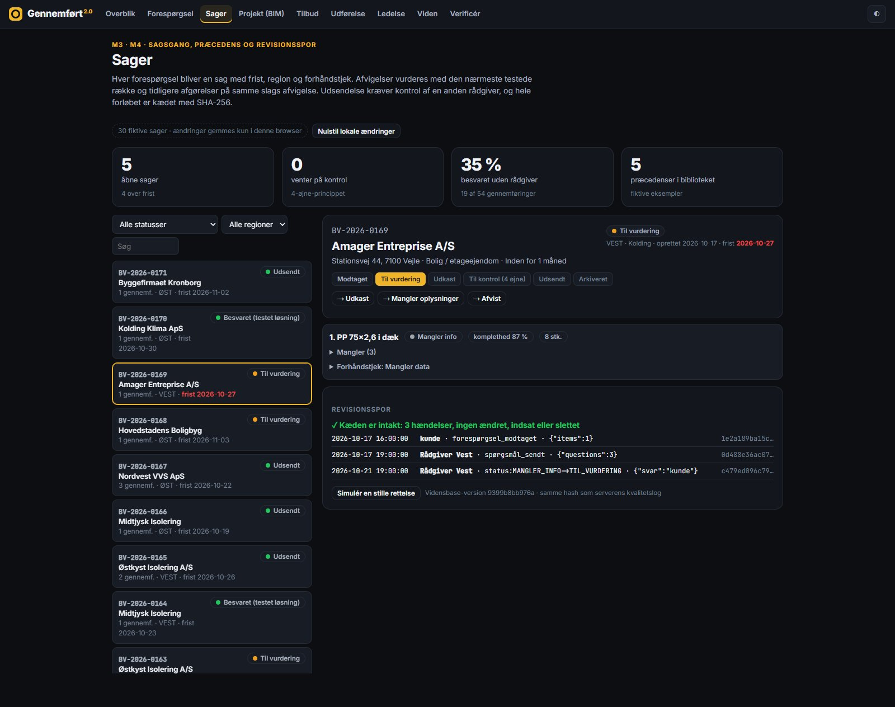
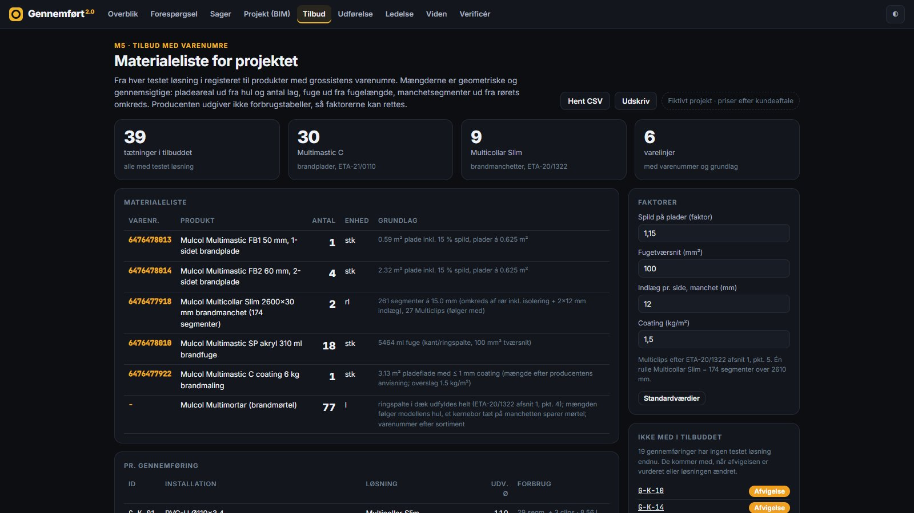
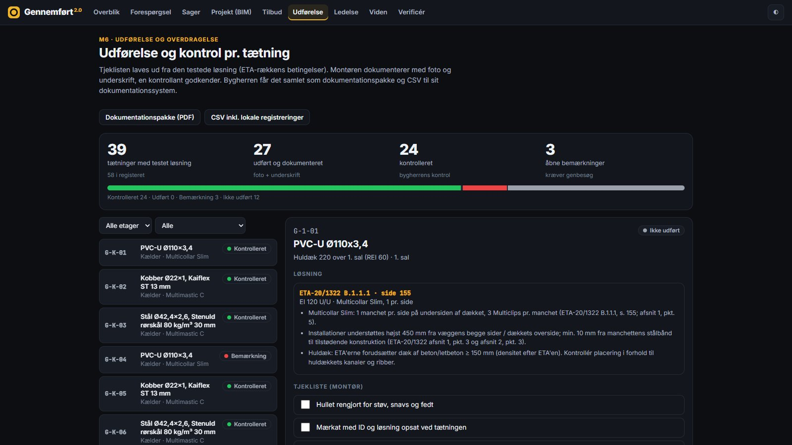
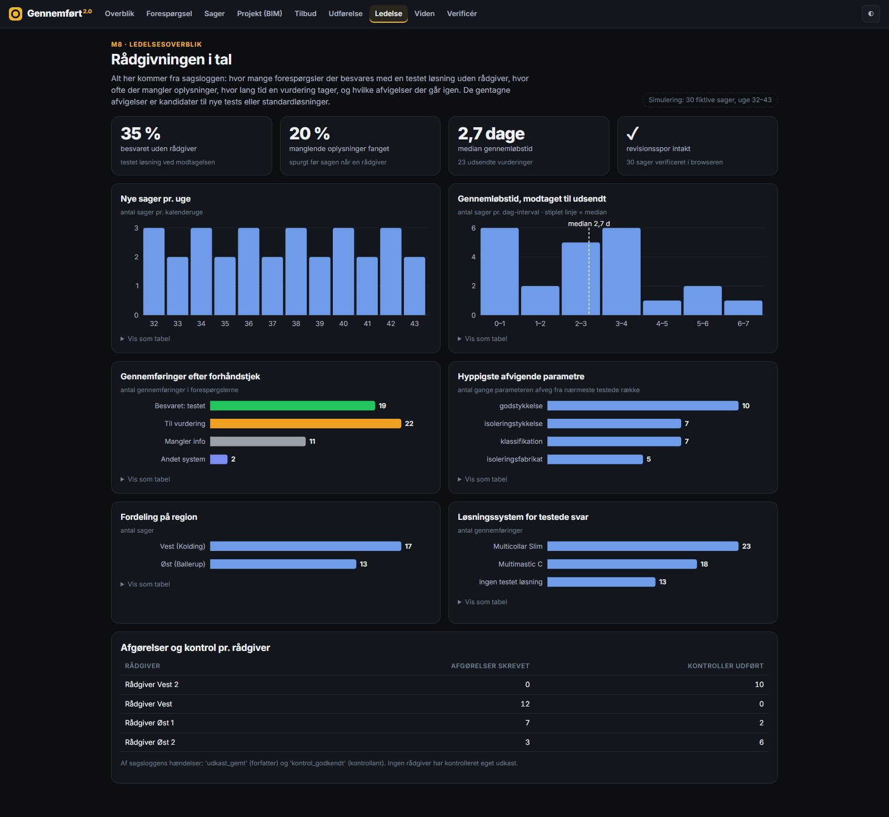
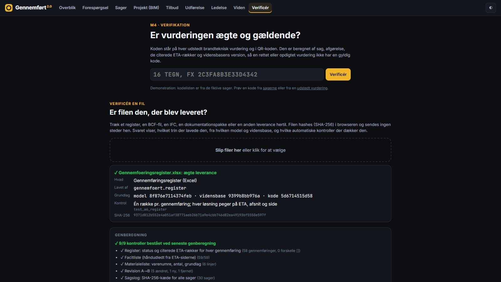
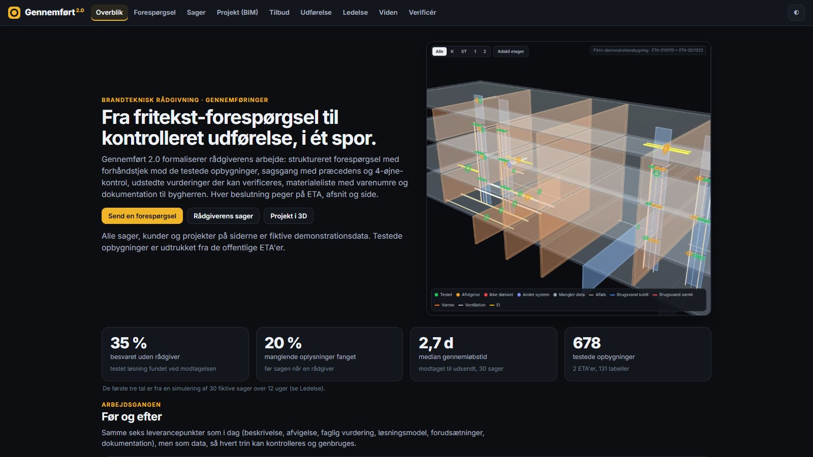
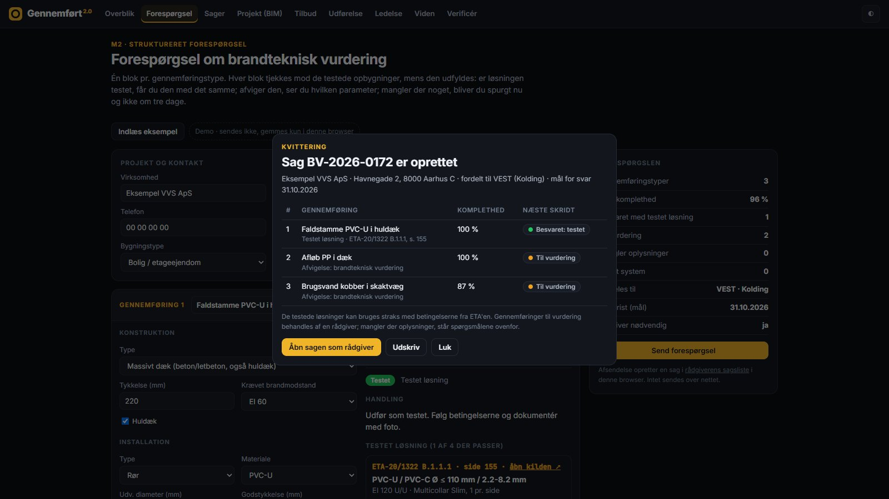
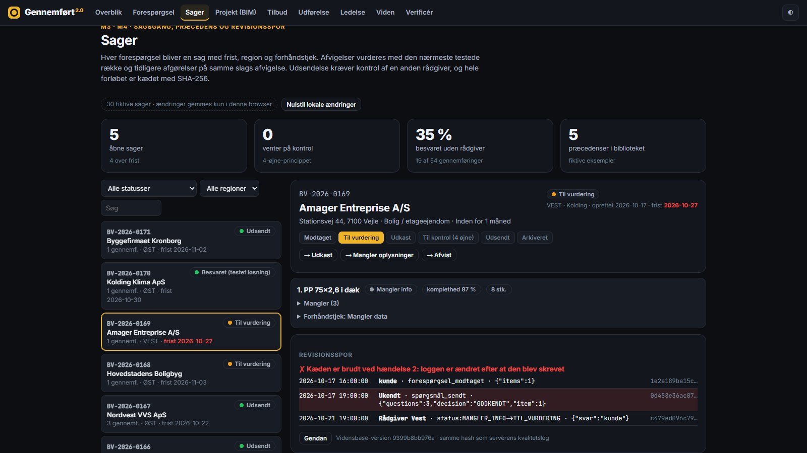

Gennemført 2.0 formalises the fire adviser's work. Enquiries are pre-checked against 678 tested rows from two ETAs while the customer types. Deviations go through a case workflow with precedents, four-eyes review and a hash-chained audit trail. Issued assessments, quotes, site records and handover packages can all be verified, file by file.
* simulation of 30 fictitious cases over 12 weeks.
Rendered frame by frame from the running app: no screen recording, no cuts in the 3D.
Same six-point deliverable as today: description, deviation, professional assessment, solution, assumptions, documentation. But each step is data that can be checked and reused.
Board seals and fire collars, 12 mounting situations, page images with the row highlighted, known source errors listed.

M2Structured intakeCompleteness score, photo checklist, live pre-check, routing and SLA.

M3 · M4Cases, precedents, four eyesDeviation signature to earlier decisions; author cannot review; SHA-256 chain.

M5Quote with item numbersBoard, sealant, collar segments, clips, with the basis on every line.

M6Execution and handoverChecklist from the ETA row, photo, signatures, inspector ≠ installer.

M7 · M8Revisions and dashboardModel revision diff by GlobalId; lead time, recurring deviations, regions.

Every output has a check a person can do in minutes, and an automated one that runs on every change.
Every deliverable is in a SHA-256 manifest with the step, model, knowledge base and code that produced it. Drag a file onto Verificér; it is hashed in your browser, never uploaded.
Every verdict shows the ETA page with the tested row highlighted, a link to the official PDF at that page, and each parameter as designed vs tested.
python -m gennemfoert.reproduce rebuilds everything from the source model and compares it with what is published: 9/9 checks.




Fourteen tools on the same engine: check a penetration, pre-check an enquiry, find precedents, read a case with its chain status, verify an assessment code, quote, revision impact.
{"mcpServers": {"gennemfoert": {
"command": "python",
"args": ["<repo>/src/mcp_server.py"]}}}